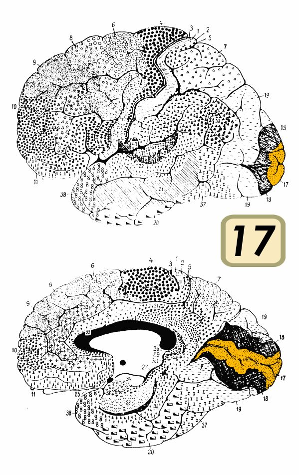

Información divulgativa. No sustituye la valoración de un profesional sanitario. Ante síntomas neurológicos bruscos (boca torcida, debilidad de un lado, dificultad para hablar) llama al 112.


Qué es
La neuritis óptica es la inflamación del nervio óptico, el cable que lleva la información visual del ojo al cerebro. Afecta sobre todo a adultos jóvenes (20-45 años), más a mujeres, con unos 5 casos por 100.000 personas al año. Es la causa más frecuente de pérdida de visión brusca de un ojo con dolor en personas jóvenes.
Síntomas
- Pérdida de visión de un ojo que se desarrolla en horas o días: visión borrosa, como a través de una niebla, o una mancha en el centro.
- Dolor al mover el ojo, en el 90 % de los casos.
- Los colores se ven apagados o desaturados, sobre todo el rojo.
- A veces, destellos de luz con los movimientos oculares.
- La visión puede empeorar con el calor o el ejercicio (fenómeno de Uhthoff).
Causas
- Esclerosis múltiple: la neuritis óptica es el primer síntoma en alrededor del 20 % de los pacientes, y la sufrirá la mitad a lo largo de la enfermedad. Tras una neuritis óptica, el riesgo de desarrollar esclerosis múltiple depende sobre todo de la resonancia cerebral: es alto si hay lesiones y bajo si es normal.
- Neuromielitis óptica (anticuerpos anti-AQP4) y MOGAD (anticuerpos anti-MOG): suelen producir neuritis más graves, en ambos ojos o recurrentes.
- Infecciones (sífilis, Lyme, virus), enfermedades autoinmunes (sarcoidosis, lupus).
- Idiopática: sin causa encontrada.
Diagnóstico
- Exploración oftalmológica: agudeza visual, visión de colores, campo visual, defecto pupilar aferente (la pupila reacciona peor al iluminar el ojo afectado). El fondo de ojo suele ser normal al principio.
- Tomografía de coherencia óptica (OCT), que mide las capas de la retina.
- Resonancia magnética de las órbitas y el cerebro, clave para valorar el riesgo de esclerosis múltiple.
- Anticuerpos anti-AQP4 y anti-MOG.
- Potenciales evocados visuales, en algunos casos.
Señales atípicas
Hacen pensar en otra causa y obligan a ampliar el estudio: afectación de ambos ojos, ausencia de dolor, pérdida de visión muy grave, inflamación importante del nervio o de la retina en el fondo de ojo, o falta de mejoría a las tres semanas.
Tratamiento
- Corticoides intravenosos a dosis altas durante 3-5 días: aceleran la recuperación, aunque no cambian la visión final en la neuritis típica (estudio ONTT). Se usan sobre todo cuando la pérdida de visión es importante.
- En la neuromielitis óptica y la MOGAD, el tratamiento es urgente e intenso, a veces con plasmaféresis.
- Si se diagnostica esclerosis múltiple, se empieza un tratamiento modificador. Ver tratamientos de la esclerosis múltiple.
Pronóstico
En la neuritis óptica típica, la visión mejora por sí sola en la mayoría a partir de las 2-3 semanas, y alrededor del 90 % recupera una agudeza visual buena al cabo de un año, aunque puede quedar una ligera alteración de la visión de colores o del contraste.
Historia · Medicapedia
La historia de esta enfermedad
Cómo se describió, quién la estudió y cómo ha cambiado su tratamiento a lo largo de los siglos, en Medicapedia, nuestra enciclopedia hermana de historia de la medicina.
Fuentes
- Optic Neuritis Study Group. Multiple sclerosis risk after optic neuritis: final ONTT follow-up. Arch Neurol. 2008;65:727-32.
- Petzold A, et al. Diagnosis and classification of optic neuritis. Lancet Neurol. 2022;21:1120-34.
- Beck RW, et al. A randomized, controlled trial of corticosteroids in the treatment of acute optic neuritis. N Engl J Med. 1992;326:581-8.
- Bennett JL, et al. Optic neuritis and autoimmune optic neuropathies: advances in diagnosis and treatment. Lancet Neurol. 2023;22:89-100.